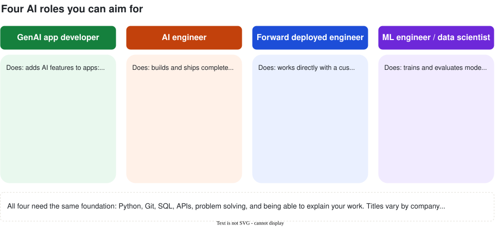
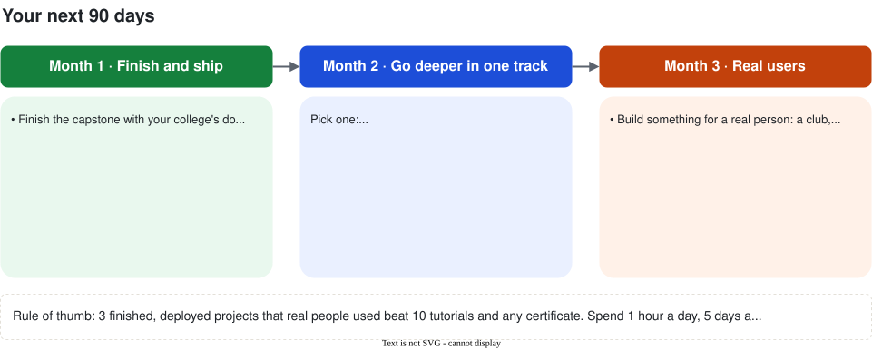

GenAI & Agentic AI Workshop · Day 2 · Session 10
Mini Project & Careers
Build your campus helpdesk agent, then plan what's next
Press → to move · S for speaker notes · F for full screen
Two days in one picture

The capstone: campus helpdesk agent 🎓

Everything, in one notebook
| Piece | From |
|---|---|
| System prompt: role, rules, cite sources | Session 2 |
| Memory: questions + answers only | Session 3 |
search_faq: RAG as a tool | Session 4 |
| Guardrails: injection check, PII masking | Session 5 |
| Agent loop + live read-only tools | Sessions 6–7 |
| Evals before sharing | Session 9 |
| Chat web page (Gradio) | Today |
New idea: RAG as a tool
"When is my OS exam?"
→ get_exam_date
"What's the hostel fee?"
→ search_faq
"Hi!"
→ no tool
The agent decides when to search.
A real conversation
🧑 Hi, I'm Priya from CSE, 3rd year.
🧑 When is my OS exam?
🛠️ get_exam_date({'subject': 'OS'}) → Mon 14 Dec, 2 PM, Hall A
🧑 Is the library open the day before?
🛠️ get_library_hours({'date': '2026-12-13'}) → Sunday, exam month: 10 AM–4 PM
🧑 What's the late fee if I pay my second instalment late?
🛠️ search_faq({'question': 'late fee ...'}) → ₹100/day, max ₹2,000 [Fees]
🧑 What's my name and branch?
🤖 You're Priya, from CSE."The day before" only works because of memory 🧠
Capstone lab (30 min) 🧪
- Knowledge base (FAQ → Chroma)
- Four read-only tools
- System prompt + guardrails
chat()with memory
- Five-turn conversation
- Run the evals
- Gradio link → open on your phone 📱
Make it yours: your college's documents · a new tool · Hindi/Kannada · deploy it
Demo time
Show us your agent! 🎤
2–3 pairs · 1 minute each · one question that worked, one that didn't
AI careers: four roles

What companies look for
🧱 Fundamentals
Python, Git, SQL, APIs, DSA
🛠️ Building
Prompts, RAG, tools, agents: deployed
🧭 Judgement
RAG vs agent vs workflow, and when not to use AI
📏 Quality
Evals, testing, debugging with traces
🛡️ Responsibility
Safety, privacy, cost
🗣️ Communication
Explain it to non-experts
Your next 90 days

A portfolio that gets interviews
- 3 good projects > 10 tutorials
- Solve a real problem for a real person
- README: GIF, diagram, how to run, eval results, limitations
- A live link anyone can try in 10 seconds
- Show your thinking: "I chose RAG because..."
- No API keys in the repo!
Interview questions you can now answer 💼
- How does an LLM generate text?
- How would you reduce hallucination?
- RAG or fine-tuning? Why?
- Your RAG bot is wrong. How do you debug it?
- What is an agent, and when would you not use one?
- How does function calling work? What is MCP?
- How do you evaluate and monitor an LLM app?
- Design a chatbot for 10,000 students.
Keep learning (free)
LLM apps & agents
DeepLearning.AI short courses · Hugging Face LLM & Agents courses · Anthropic courses · LangChain Academy
ML foundations
fast.ai · Google ML Crash Course · NPTEL · Kaggle Learn
Practice: Kaggle · Smart India Hackathon · Google Summer of Code · open source
That's a wrap 🎉
You built an AI agent from zero.
Ship it this month. Share it. Help a friend build theirs.
All notes, slides and labs:
amitpnk.github.io/Agentic-AI-From-Zero
Thank you! Questions? 🙋